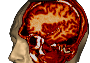
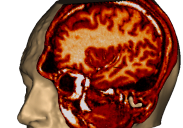
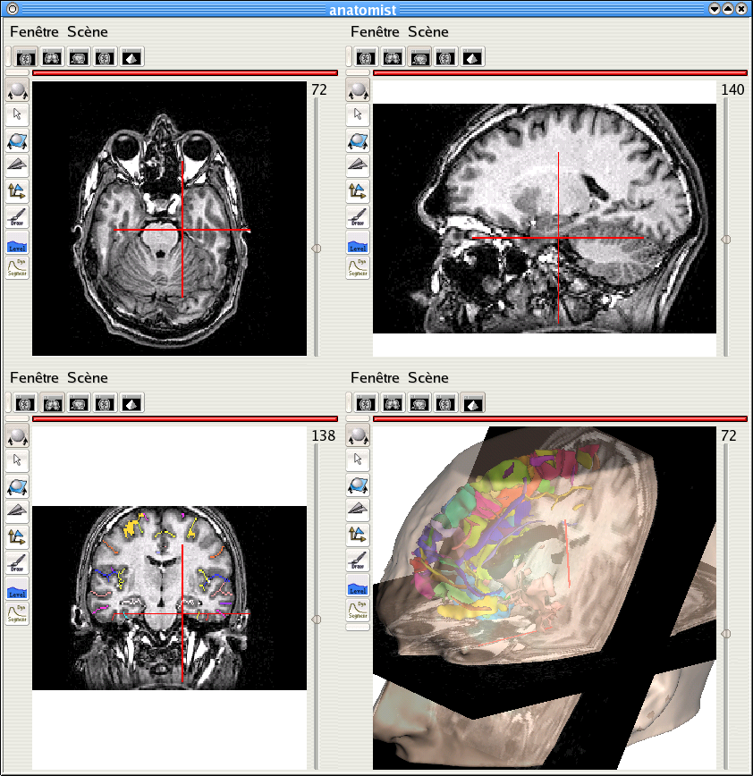
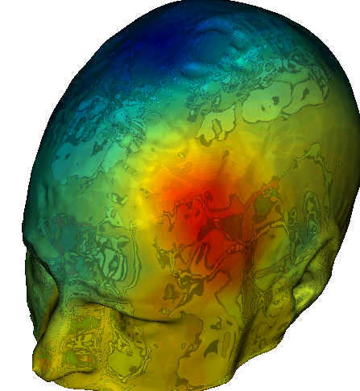
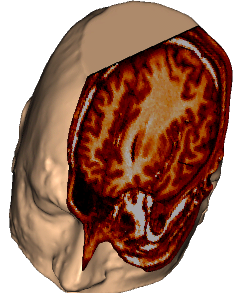
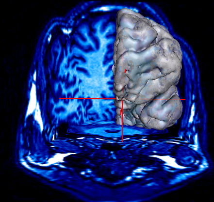
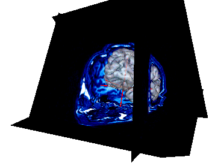
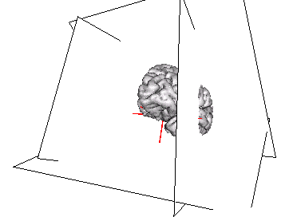

|  |
Anatomist: a quick overview of other undocummented features |
 |
|  |
Anatomist: a quick overview of other undocummented features |
|

New in Anatomist 3.0: several views in the same window
|
 Anatomist 3.0: multiple textures (interpolated ERP data + reflection image) |
 Anatomist 1.29 (still unstable on 3.0): cut mesh and volume |
|  |   |